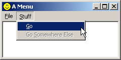

Example: menu_one
This is just a small section to show how to add basic menus to your window. Usually you use a pre-made menu resource. This will be in an .rc file and will be compiled and linked into your .exe. This is rather compiler specific, commercial compilers will have a resource editor that you can use to create your menus, but for this example I will show the text of the .rc file so you can add it in manually. I usually have an .h file as well which is included in both my .rc file and my .c source files. This file contains the identifiers for controls and menu items etc.
For this example you can start with the window code from simple_window and add this code into it as instructed.
First the .h file. Usually called "resource.h"
#define IDR_MYMENU 101 #define IDI_MYICON 201 #define ID_FILE_EXIT 9001 #define ID_STUFF_GO 9002Not much there, but our menu will be pretty simple. The names and values here are up to you for the choosing. Now we write our .rc file.
#include "resource.h"
IDR_MYMENU MENU
BEGIN
POPUP "&File"
BEGIN
MENUITEM "E&xit", ID_FILE_EXIT
END
POPUP "&Stuff"
BEGIN
MENUITEM "&Go", ID_STUFF_GO
MENUITEM "G&o somewhere else", 0, GRAYED
END
END
IDI_MYICON ICON "menu_one.ico"
You will want to add the .rc file to your project or makefile depending on what tools you are using.
You also want to #include "resource.h" in your source file (.c) so that
the menu command identifiers and the menu resource id will be defined.
The easiest way to attach the menu and icon to your window is to specify them when you register the window class, like this:
wc.lpszMenuName = MAKEINTRESOURCE(IDR_MYMENU);
wc.hIcon = LoadIcon(GetModuleHandle(NULL), MAKEINTRESOURCE(IDI_MYICON));
wc.hIconSm = (HICON)LoadImage(GetModuleHandle(NULL), MAKEINTRESOURCE(IDI_MYICON), IMAGE_ICON, 16, 16, 0);
Change that and see what happens. Your window should now have a File and Stuff menu with the respective items underneath. That is assuming your .rc file was properly compiled and linked into your program. (again, see compiler notes)
The icon in the top left of the window and on the task bar should now display the small custom icon that we specified. If you hit Alt-Tab, the large version of the icon should be displayed in the application list.
I've used LoadIcon() to load the large icon because it's simpler, however it will only
load icons at the default resolution of 32x32, so in order to load the smaller image, we need to use
LoadImage(). Be aware that icon files and resources can contain multiple images, and in
this case the ones I've supplied contain the two sizes that I'm loading.
Example: menu_two
An alternative to using a menu resource is to create one on the fly (or when your program runs). This is a bit more work programming wise, but adds flexibility and is sometimes necessary.
You can also use icons that aren't stored as resources, you could choose to store your icon as a seperate file and load it at runtime. This would also give you the option of allowing the user to select an icon of their choice with the common dialogs discussed later, or something to that effect.
Start again from simple_window without the .h or .rc added. Now we will
handle the WM_CREATE message and add a menu to our window.
#define ID_FILE_EXIT 9001 #define ID_STUFF_GO 9002Put these two id's at the top of your .c file this time, underneath your
#includes.
Next we add the following code into our WM_CREATE handler.
case WM_CREATE:
{
HMENU hMenu, hSubMenu;
HICON hIcon, hIconSm;
hMenu = CreateMenu();
hSubMenu = CreatePopupMenu();
AppendMenu(hSubMenu, MF_STRING, ID_FILE_EXIT, "E&xit");
AppendMenu(hMenu, MF_STRING | MF_POPUP, (UINT)hSubMenu, "&File");
hSubMenu = CreatePopupMenu();
AppendMenu(hSubMenu, MF_STRING, ID_STUFF_GO, "&Go");
AppendMenu(hMenu, MF_STRING | MF_POPUP, (UINT)hSubMenu, "&Stuff");
SetMenu(hwnd, hMenu);
hIcon = LoadImage(NULL, "menu_two.ico", IMAGE_ICON, 32, 32, LR_LOADFROMFILE);
if(hIcon)
SendMessage(hwnd, WM_SETICON, ICON_BIG, (LPARAM)hIcon);
else
MessageBox(hwnd, "Could not load large icon!", "Error", MB_OK | MB_ICONERROR);
hIconSm = LoadImage(NULL, "menu_two.ico", IMAGE_ICON, 16, 16, LR_LOADFROMFILE);
if(hIconSm)
SendMessage(hwnd, WM_SETICON, ICON_SMALL, (LPARAM)hIconSm);
else
MessageBox(hwnd, "Could not load small icon!", "Error", MB_OK | MB_ICONERROR);
}
break;
This creates a menu almost the same as the one we had in the resource and
attaches it to our window. A menu that is assigned to a window is automatically
removed when the program terminates, so we don't need to worry about getting rid
of it later. If we did though, we could use GetMenu() and DestroyMenu().
The code for the icons is pretty simple, we call LoadImage() twice, to load the
icon as both a 16x16 size and a 32x32 size. We can't use LoadIcon() at all
because it will only load resources, not files. We specify NULL for the instance
handle parameter because we aren't loading a resource from our module, and instead of a resource
ID we pass in the name of the icon file we want to load. Finally, we pass in the
LR_LOADFROMFILE flag to indicate that we want the function to treat the string we give it
as a filename and not a resource name.
If each call succeeds we assign the icon handle to our window with WM_SETICON, and if it
fails we pop up a message box letting us know something went wrong.
NOTE: that the LoadImage() calls will fail if the icon file isn't in the current
working directory of the program. If you are using VC++ and you run the program from the IDE, the current
working directory will be the one the project file is in. However if you run the program from the Debug or
Release directories from explorer or the command shell, then you'll need to copy the icon file into that directory
in order for the program to find it. If all else fails, specify the full path to the icon, "C:\\Path\\To\\Icon.ico".
Okay now that we have our menu, we need to make it do something. This is
pretty simple, all we need to do is handle the WM_COMMAND message.
Also we'll need to check which command we are getting and act accordingly. Now our
WndProc() should look something like this.
LRESULT CALLBACK WndProc(HWND hwnd, UINT Message, WPARAM wParam, LPARAM lParam)
{
switch(Message)
{
case WM_CREATE:
{
HMENU hMenu, hSubMenu;
hMenu = CreateMenu();
hSubMenu = CreatePopupMenu();
AppendMenu(hSubMenu, MF_STRING, ID_FILE_EXIT, "E&xit");
AppendMenu(hMenu, MF_STRING | MF_POPUP, (UINT)hSubMenu, "&File");
hSubMenu = CreatePopupMenu();
AppendMenu(hSubMenu, MF_STRING, ID_STUFF_GO, "&Go");
AppendMenu(hMenu, MF_STRING | MF_POPUP, (UINT)hSubMenu, "&Stuff");
SetMenu(hwnd, hMenu);
hIcon = LoadImage(NULL, "menu_two.ico", IMAGE_ICON, 32, 32, LR_LOADFROMFILE);
if(hIcon)
SendMessage(hwnd, WM_SETICON, ICON_BIG, (LPARAM)hIcon);
else
MessageBox(hwnd, "Could not load large icon!", "Error", MB_OK | MB_ICONERROR);
hIconSm = LoadImage(NULL, "menu_two.ico", IMAGE_ICON, 16, 16, LR_LOADFROMFILE);
if(hIconSm)
SendMessage(hwnd, WM_SETICON, ICON_SMALL, (LPARAM)hIconSm);
else
MessageBox(hwnd, "Could not load small icon!", "Error", MB_OK | MB_ICONERROR);
}
break;
case WM_COMMAND:
switch(LOWORD(wParam))
{
case ID_FILE_EXIT:
break;
case ID_STUFF_GO:
break;
}
break;
case WM_CLOSE:
DestroyWindow(hwnd);
break;
case WM_DESTROY:
PostQuitMessage(0);
break;
default:
return DefWindowProc(hwnd, Message, wParam, lParam);
}
return 0;
}
As you can see we've got our WM_COMMAND all set up, and it even has another switch() in it.
This switch()'s on the value of the low word of wParam, which in the case of WM_COMMAND
contains the control or menu id that sent the message.
We obviously want the Exit menu item to close the program. So in the WM_COMMAND,
ID_FILE_EXIT handler you can use the following code to do just that.
PostMessage(hwnd, WM_CLOSE, 0, 0);
Your WM_COMMAND handler should now look like this:
case WM_COMMAND:
switch(LOWORD(wParam))
{
case ID_FILE_EXIT:
PostMessage(hwnd, WM_CLOSE, 0, 0);
break;
case ID_STUFF_GO:
break;
}
break;
I leave it up to you to make the other menu command ID_STUFF_GO do something.
menu_one.exe file now shows up as the custom icon we added as a
resource, whereas the menu_two.exe file does not, since we are loading an external file. Windows
Explorer simply displays the first icon (numerically by ID) in the program files resources, so
since we only have one icon, that's what it is displaying. If you want to be sure that a certain
icon is displayed with your program file, simply add it as a resource and assign it a very low ID... like 1.
You don't even need to refer to the file in your program, and you can load completely different icons for
your windows if you choose.